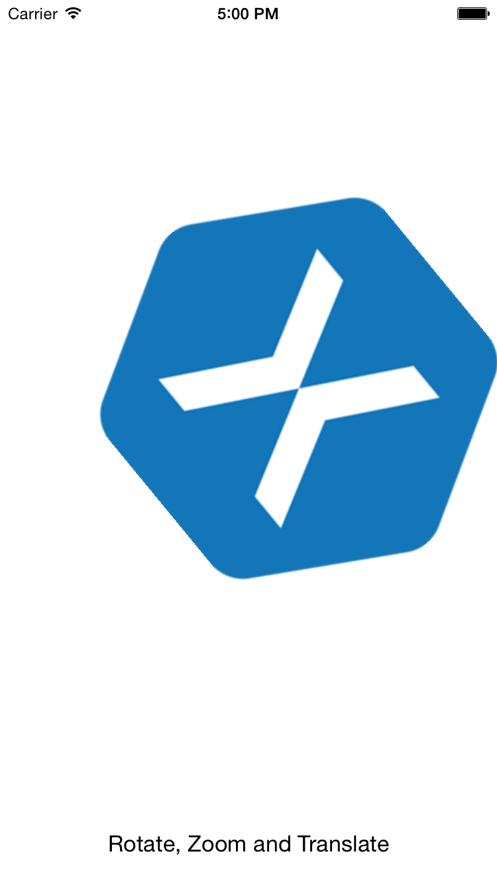

Duration
15 minutes
Goals
The primary goal of this lab is to use multiple gestures simultaneously.
Required assets
The lab is a continuation of the previous exercise. You can use your existing project or open the completed solution in in the Exercise 3 folder. Additionally, there is a completed solution in the Exercise 4 folder which you can use to compare your work.
Challenge
This is an individual exercise, intended for you to complete on it on your own during class; take advantage of the live instructor and ask questions. Here are the high-level steps we will be working through:
- Add class level variables of type
nfloatto track rotation and scale. - Update the
UpdateTransformmethod using the new variables. - Add gesture recognizers for pinch and rotation to the view controller.
- Add handler methods for both gesture recognizers.
- Update the class level variable for float and scale in the handler methods.
- Set all three gesture recognizers
ShouldRecgonzierSimultaneouslydelegates to allow simultaneous gestures.
Steps
Below are the step-by-step instructions to complete the exercise.
Add class level variables
In this lab we'll be adding gesture recognizers to rotate and scale the logo.
- Open GesturesViewControllers.cs.
- Add a class level
nfloatvariable named rotation and initialize it to 0. - Add a class level
nfloatvariable named scale and initialize it to 1.
Update the UpdateTransform method
We'll continue to use the UpdateTransform method to set the visual state of our Xamarin logo.
- Call transform's
Rotatemethod, passing in the class level variable rotation we just created. - Call transform's
Scalemethod, passing the the class level variable scale for both parameters.
Add gesture recognizers
- In the
ViewDidLoadmethod, create aUIRotationGestureRecognizernamed rotationGesture. - We'll create a method named HandleRotation to respond to the recognizer; set the
Actionconstructor parameter to "HandleRotation". - Create a
UIPinchGestureRecognizernamed pinchGesture. - We'll create a method named HandlePinch to respond to the recognizer, set the
Actionconstructor parameter to "HandlePinch". - Add both gesture recognizers to the view controller.
Create the HandlePinch method
- Create a
voidmethod named HandlePinch that accepts aUIPinchGestureRecognizer. - Use the
UIPinchGestureRecognizer'sScaleproperty to update the class levelnfloatscale. We're interested in the change in scale; multiply the class level scale by the updated value. - You'll likely want to add some bounds checking on the scale, limit the value to go no higher than 2.5, and no smaller than 0.1.
- Now set the passed in gesture's Scale property back to 1. This way every update will be relative to 1 (or 100%).
- And then call the UpdateTransform method to update the scale of the Xamarin logo.
Create the HandleRotation method
- Create a
voidmethod named HandleRotation that accepts aUIRotationGestureRecognizer. - Use the
UIPinchGestureRecognizer's Rotation to update the class level rotation variable. - Call the UpdateTransform method to update the rotation of the Xamarin logo.
- Run the application.
Enable simultaneous gestures
Notice that all three gestures work individually, but not at the same time. This is by design, by default, if a gesture has been recognized, a view won't recognize other gestures for given interaction.
- Create a
boolmethod names ShouldRecognizeSimultaneously that accepts twoUIGestureRecognizers - gestureRecognizer otherGestureRecognizer. - In this case we'll return true, but remember you can do comparisons on the passed in values to decide if a gesture is allowed once another has started.
- In the
ViewDidLoadmethod, set all three gesture recognizer'sShouldRecognizeSimultaneouslydelegates to our new ShouldRecognizeSimultaneously method. - Run the app again.
Summary
In this exercise you added both a pinch and a rotation gesture detector and enabled the gestures to work simultaneously.